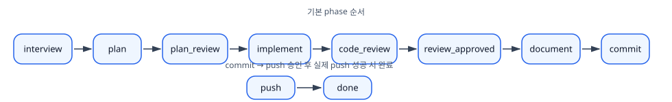
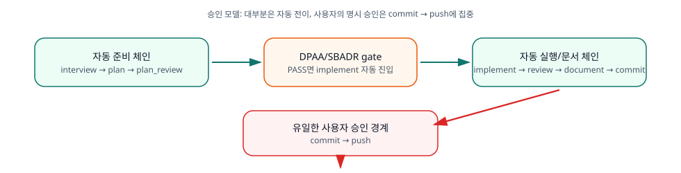
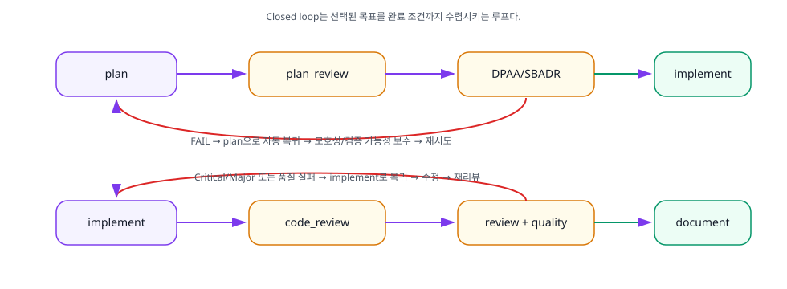
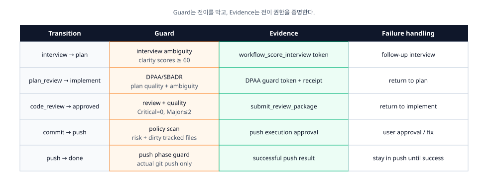
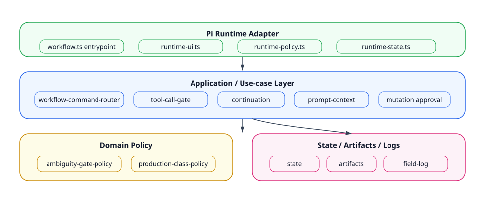
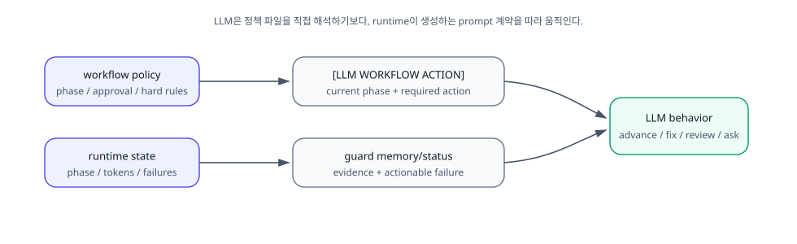
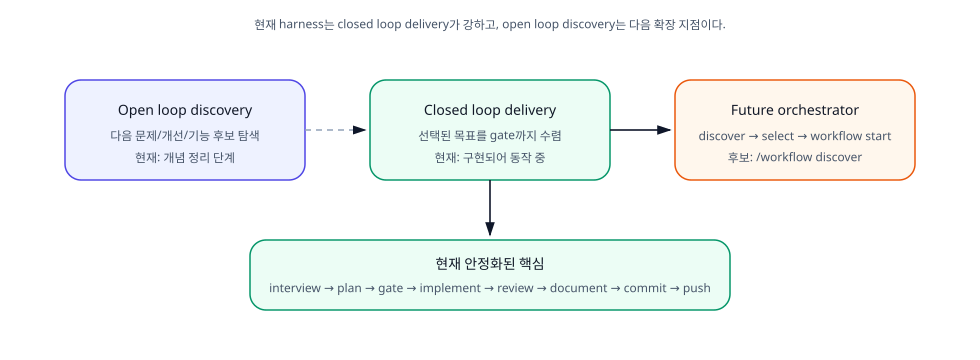
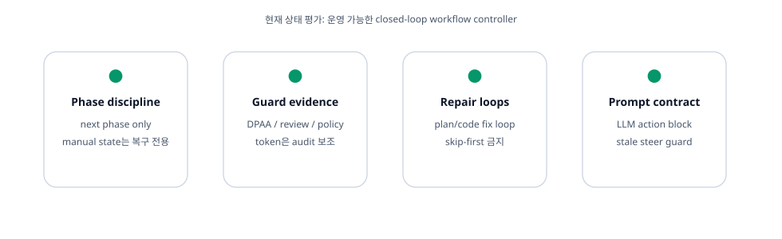
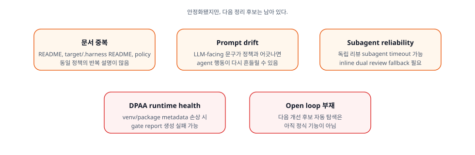
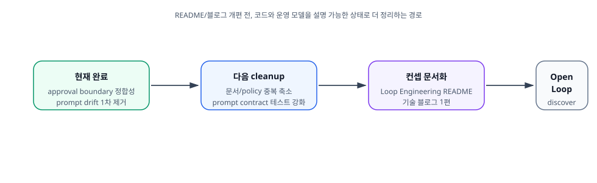

작성일: 2026-06-29
범위: Pi Workflow Harness의 현재 운영 모델, Guard/Evidence 구조, 자동 전이 정책, 최근 승인 경계(Approval Boundary) 정리 반영 상태
현재 상태를 정리하기 위해 일단 문서로 남겨보려고 합니다.
Workflow Harness는 AI Coding Agent를 단순한 코드 생성기가 아니라, 제약된 환경 안에서 스스로 작업을 완료하는 실행자로 다룹니다.
이를 위해 Phase, Guard, Evidence, Review Package, Policy Scan을 조합해 검증 가능한 Closed Loop 안에서 작업을 완료하도록 설계한 Runtime Controller로 만들고 있습니다.
핵심 설계 원칙은 세 가지입니다.
즉, AI에게 더 많은 자유를 주되, 그 자유는 명확한 상태(State)와 정책(Policy) 안에서만 허용합니다.
이 부분을 한참 고민했습니다. 모델의 빠른 발전을 감안할 때, 모델의 능력을 지나치게 제한하기보다는 상태 머신으로서의 동작과 정책을 통해 LLM의 행동을 원하는 방향으로 유도하는 편이 더 유리하겠다고 생각했습니다.
Workflow는 다음 순서로 진행됩니다.
deep interview
↓
plan
↓
plan_review
↓
implement
↓
code_review
↓
review_approved
↓
document
↓
commit
↓
push
↓
done
Phase의 기준(Source of Truth)은
.harness/workflow-policy.json 하나만 사용합니다. PEV(Plan,
Execute, Verify)는 단일 직선 흐름이라기보다 반복 가능한 루프로
동작합니다.
현재 Workflow의 가장 중요한 특징은 대부분의 전이가 자동으로 이루어진다는 점입니다.
자동으로 진행되는 구간은 다음과 같습니다.
interview → plan
plan → plan_review
plan_review → implement
implement → code_review
review_approved → document
document → commitplan_review → implement는 DPAA/SBADR을 통과했을 때
자동으로 진행됩니다. 이 단계에서는 LLM의 판단과 기계적인 Eval을 함께
사용해 모호성을 병렬로 검증합니다. LLM이 판단했을 때 Human Eval이
필요하다고 보이면, 사용자에게 검토를 요청한 뒤 구현을 시작합니다.
반면 사용자의 명시적인 승인이 필요한 구간은 단 하나뿐입니다.
commit → push
여기서 많이 오해할 수 있는 부분이 있습니다.
plan_review → implement는 사용자 승인 단계가 아닙니다.
이 구간은 DPAA/SBADR Guard를 통과하면 자동으로 다음 Phase로
진행됩니다.
즉, Workflow는 가능한 한 자동으로 흐르되, 실제 코드가 외부 저장소에 반영되는 시점만 사용자가 최종적으로 승인합니다.
Workflow Harness는 실패를 사용자에게 질문을 던지는 이벤트로 취급하지 않습니다.
실패는 단순히 이전 Phase로 되돌아가는 상태 전이(State Transition)로 처리됩니다.
예를 들면 다음과 같습니다.
DPAA/SBADR 실패
plan_review → plan
Review 실패
code_review → implement
즉, 기본 동작은 다음과 같습니다.
실패 → 수정 → 재검증 → 다시 진행사용자가 직접 개입하는 경우는 Repair Loop로도 해결할 수 없는 상황이거나, Push처럼 위험도가 높은 작업뿐입니다.
Workflow에서는 Guard와 Evidence를 명확히 구분합니다.
Evidence는 단순히 “토큰이 있으니 통과한다”는 의미가 아닙니다.
실제 전이 여부는 Workflow Policy가 결정하며, Evidence는 그 판단을 뒷받침하는 Audit 정보에 가깝습니다.

Runtime은 workflow.ts를 진입점(Entrypoint)으로
사용합니다.
이후의 책임은 각각 독립된 모듈로 분리되어 있습니다.

덕분에 Runtime은 조립(Composition)에 집중하고, 정책과 비즈니스 로직은 서로 독립적으로 관리됩니다.
처음부터 이렇게 분리되어 있지는 않았습니다. Harness가 고도화되면서 책임 경계가 점점 중요해졌고, 그 과정에서 지금과 같은 구조로 나누게 되었습니다.
LLM은 Workflow Policy를 직접 해석하지 않습니다.
대신 Runtime이 생성하는 Prompt Contract를 통해 현재 상태를 전달받습니다.
Prompt에는 다음과 같은 정보가 포함됩니다.

즉, LLM은 “정책을 이해하는 것”이 아니라 현재 Workflow 상태를 따라 행동하는 것에 집중합니다.
최근에는 오래된 Approval 관련 문구를 모두 제거해 Prompt Drift를 줄였습니다.
LLM은 Stateless한 특성이 있기 때문에, 최대한 각 단계의 실행에만 집중하도록 만드는 편이 더 안정적입니다. 동시에 Main Context의 Pollution을 줄이기 위해 필요한 정보만 Prompt Contract로 전달하려고 합니다.
현재 Harness는 Closed Loop Delivery에 집중되어 있습니다.
사용자가 선택한 작업을 시작부터 완료까지 안정적으로 끝내는 것이 현재의 핵심 목표입니다.

앞으로는 다음과 같은 기능을 추가할 계획입니다.
즉, 다음과 같은 형태의 Orchestrator를 만드는 것이 다음 목표입니다.
Discover
↓
Select
↓
Workflow Start사실 저는 휴가를 다녀오느라 Loop Engineering 흐름을 제대로 따라가지 못했습니다. 그래도 지금 정리한 Closed Loop 기반 위에 Open Loop Discovery를 얹는 방향이 다음 단계라고 보고 있습니다.
현재 구조의 장점은 다음과 같습니다.

결국 AI에게 자유를 주되, 모든 행동은 상태와 정책 안에서만 이루어지도록 만드는 구조입니다.
아직 개선이 필요한 부분도 있습니다.

특히 가장 중요한 것은 정책과 Prompt가 항상 동일한 모델을 설명하도록 유지하는 것입니다.
정책은 바뀌었는데 Prompt가 예전 모델을 설명하면, LLM은 실제 정책이 아니라 Prompt에 적힌 방향으로 움직입니다. 이번 승인 경계 정리도 결국 이 문제를 확인하고 고친 작업이었습니다.
Approval Boundary를 명확하게 정리했습니다.
이전에는 다음과 같은 문제가 있었습니다.
plan_review → implement를 승인 단계처럼
설명했습니다.implementation approval dialog 표현이 남아
있었습니다.present the plan for approval 문구가 남아
있었습니다.현재는 다음과 같이 정리했습니다.
commit → push 하나만
존재합니다.plan_review는 DPAA/SBADR Guard를 수행합니다.다음으로 진행하려는 작업은 다음과 같습니다.

현재 Workflow Harness는 운영 가능한 Closed Loop Workflow Controller 수준까지 정리되었습니다.
사용자 승인 경계는 commit → push 하나로 단순화되었고,
대부분의 작업은 Guard와 Repair Loop를 기반으로 자동 진행됩니다.
다음 단계는 Open Loop Discovery와 문서 구조를 더욱 정교하게 다듬는 것입니다.
궁극적으로는 AI에게 더 많은 권한을 주는 것이 아니라,
AI가 항상 예측 가능한 방식으로 움직이도록 루프를 설계하는 것이 목표입니다.